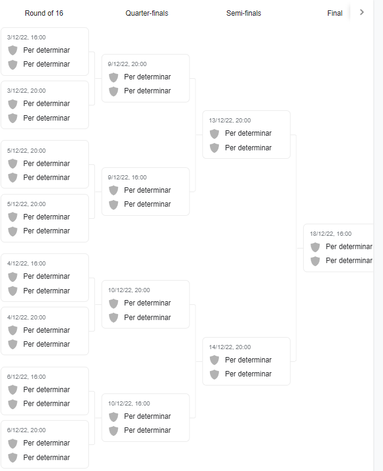

MUNDIAL 2022
El mundial 2022 se celebrará en Qatar, en los meses de Noviembre y Octubre. Es la primera vez q se hace así debido a las altas temperaturas en Qatar en verano.
Primero se disputara una fase de clasificación disputada por 55 paises en 10 grupos (5 grupos de 5 paises y otros 5 de 6 paises)
-
Grupo A:
Portugal, Serbia, Irlanda, Luxemburgo, Azerbayan
-
Grupo B:
España, Suecia, Grecia, Georgia, Kosovo
-
Grupo C:
Italia, Suiza, Irlanda del Norte, Bulgaria, Lituania
-
Grupo D:
Francia, Ucrania, Finlandia, Bosnia, Kazajistan
-
Grupo E:
Belgica, Gales, Republica Checa, Bielorrusia, Estonia
-
Grupo F:
Dinamarca, Austria, Escocia, Israel, Islas Feroe, Moldavia
-
Grupo G:
Holanda, Turquia, Noruega, Montenegro, Letonia, Gibraltar
-
Grupo H:
Croacia, Eslovaquia, Rusia, Eslovenia, Chipre, Malta
-
Grupo I:
Inglaterra, Polonia, Hungria, Albania, Andorra, San Marino
-
Grupo J:
Alemania, Rumania, Islandia, Macedonia del Norte, Armenia, Liechtenstein
Grupos Mundial:

La primera ronda de partidos se celebraró los dias 24 y 25 de marzo
Y la ultima jornada se disputa del 14 al 16 de Noviembre
Así es como va la fase de grupos ahora mismo:


Una vez acabada la fase de grupos, se relizaran los dieciseiavos, donde se enfrentaran todos los primeros de grupo más algunos segundos que previamente habrán ganado una fase de play offs.
Así es como van a ser las siguientes rondas:
